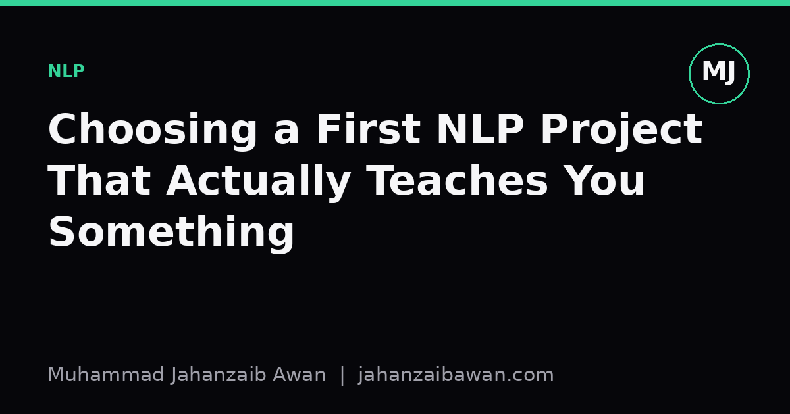

Choosing a First NLP Project That Actually Teaches You Something
A small, well-scoped text classification task can teach tokenisation, embeddings, and evaluation discipline better than any flashy generative demo.

Why the first project matters more than the tenth
When I talk to people starting out in NLP, the instinct is almost always to build something impressive: a chatbot, a summariser, a mini language model. I understand the appeal, but I think it is the wrong place to start. Flashy projects hide too many moving parts behind pretrained weights and clever prompts, so you never actually see tokenisation, embeddings, or evaluation doing their work. You end up with something that demos well and teaches you very little.
A better first project is boring on purpose: a text classifier on a small, well-understood dataset, built from scratch rather than fine-tuned from a huge pretrained model. Think sentiment on product reviews, topic labelling on news snippets, or spam detection. The task itself is not the point. The point is that a classifier forces you to make every decision explicit, from how you split words into tokens through to how you measure whether the model actually works.
This matters because the three ideas, tokenisation, embeddings, and evaluation, are not separate topics to learn in sequence. They interact. A poor tokenisation choice changes your vocabulary size, which changes your embedding dimension and training time, which changes how you should evaluate and compare models. A first project that touches all three at once, even in a simple form, gives you an intuition that reading three separate tutorials never will.
Tokenisation: the decision you make before you know you are making it
Suppose you have five thousand customer reviews labelled positive or negative. The first real decision is how to turn raw text into tokens. Split on whitespace and lowercase everything, and you might get a vocabulary of twelve thousand unique tokens. Switch to a subword tokeniser, and that number might drop to eight thousand pieces, because rare words like 'disappointing' get split into chunks that are shared with other words.
This is not a cosmetic choice. With whitespace tokenisation, a word that appears only twice in training, say 'overpriced', gets its own rarely-seen embedding and the model struggles to learn anything useful about it. With subword tokenisation, 'overpriced' might decompose into 'over' and 'priced', both of which appear often elsewhere, so the model can generalise from those pieces even when the whole word is rare. Building both versions yourself, by hand, and watching how your out-of-vocabulary rate changes on a held-out set, teaches this far better than being told it in the abstract.
There is a second lesson hiding here too: punctuation and casing decisions leak into your results. If you lowercase during training but forget to lowercase your test inputs consistently, you silently inflate your out-of-vocabulary rate at evaluation time and your reported accuracy becomes meaningless. I would genuinely recommend writing your tokeniser as its own small function with tests, rather than inlining it, precisely because this class of bug is invisible until you go looking for it.
Embeddings: where the vocabulary choice shows up again
Once you have tokens, you need vectors. A first project is a good place to compare two approaches honestly: train embeddings from scratch on your small dataset, and separately try a set of pretrained embeddings loaded in and frozen. The comparison is instructive precisely because it usually disappoints people's expectations in a useful way.
With five thousand reviews, training embeddings from scratch gives the model very little signal per word. A word like 'excellent' might appear four hundred times, so its vector becomes reasonably stable, but a word like 'mediocre' might appear only fifteen times, and its vector will be noisy and overfit to the handful of sentences it appeared in. Pretrained embeddings, by contrast, were estimated from a vastly larger corpus, so 'mediocre' already sits in a sensible place relative to 'average' and 'disappointing' before your model has seen a single review.
The practical upshot, which you only really internalise by measuring it, is that pretrained embeddings tend to help most exactly where your own data is thinnest: rare words and long-tail vocabulary. On the common, frequent words that dominate your training set anyway, the gap between from-scratch and pretrained embeddings often narrows substantially. Seeing this pattern in your own numbers, rather than reading it as a general claim, is what makes it stick.
Evaluation: the part people skip, to their own cost
Here is where a first project earns its keep. It is entirely possible to build a classifier that reports ninety per cent accuracy and is still badly broken, because your dataset is imbalanced. If eighty five per cent of your reviews are positive, a model that always predicts positive scores eighty five per cent accuracy while learning nothing. The fix is not exotic: look at precision and recall for each class separately, and check a confusion matrix before trusting a single accuracy number.
The second trap is leakage, and a first project is the cheapest place to learn to fear it. If your reviews include several entries from the same product, and you split train and test randomly rather than by product, your model can effectively memorise product-specific vocabulary during training and then recognise it at test time. Your reported accuracy will look stronger than the model's real ability to generalise to new products. Splitting by a grouping key, not just randomly by row, is a habit worth building early rather than relearning painfully on a larger project later.
Finally, always build a trivial baseline before celebrating your neural network's score. A model that predicts the majority class, or a simple logistic regression over word counts, takes minutes to build and tells you what 'better than nothing' actually looks like for your specific dataset. If your carefully tuned embedding-based model only beats that baseline by two points, that is a genuinely important result, and one you would never have known without building the baseline first.
The practical takeaway is simple: pick a small classification task, build the tokeniser yourself, compare from-scratch against pretrained embeddings, and evaluate with class-wise metrics against a leakage-aware split and an honest baseline. That one project, done properly, teaches more durable intuition than a dozen tutorials copied without understanding.